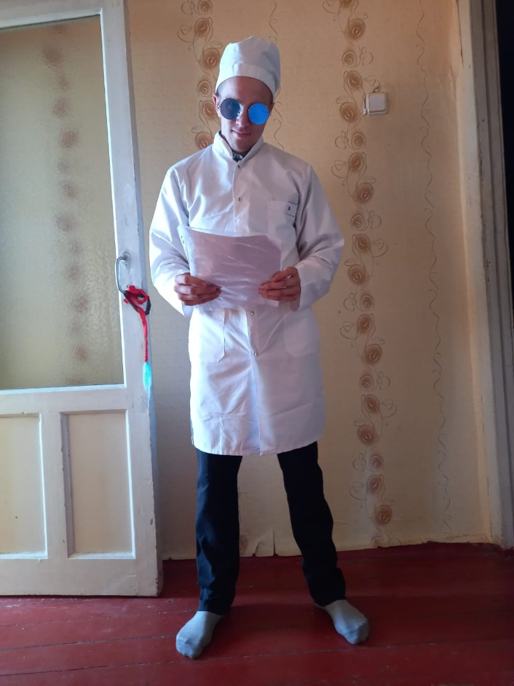
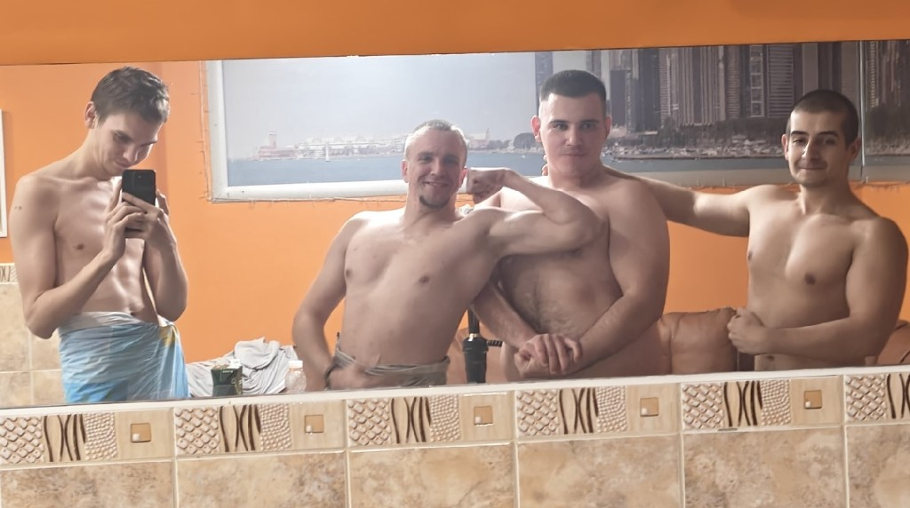

Дежурство — круглосуточно
Страж в тёмное время
«Когда другие спят — Евгений бдит. Рядом с ним — символ несокрушимой силы, выкованной из воли и металла. Настоящий защитник не знает страха перед тьмой.»
Каждый кадр — свидетельство мужества, чести, дружбы и преданности Родине
За каждым великим защитником стоят верные друзья. Евгений Лапин окружён людьми, которым можно доверять — и это не случайность. Он сам выбирает дружбу так же сознательно, как служит Родине: с честью, открытостью и полной отдачей.
На этих фотографиях — не просто моменты из жизни. Это истории о том, как рождается настоящее братство: в совместных победах, в трудные минуты, в простых радостях повседневности. Друзья Евгения — его опора, его семья, его боевое братство.
«Когда другие спят — Евгений бдит. Рядом с ним — символ несокрушимой силы, выкованной из воли и металла. Настоящий защитник не знает страха перед тьмой.»

«Верный товарищ, надёжный друг. Евгений — тот, за спиной которого можно не оглядываться. Дружба для него — не пустой звук, а священный долг. Вместе — сила, вместе — победа, вместе — навсегда!»

«Спасать жизни — высшее проявление патриотизма. Евгений несёт свет исцеления там, где он нужнее всего. Доблесть медика — не меньше доблести воина.»

«Родная земля, родные реки, верный спутник — всё это Евгений бережёт как святыню. Защищать Родину — значит любить каждый её уголок.»

«Физическая сила — оружие защитника, а дружба — его щит. Евгений закаляет тело и дух вместе с верными товарищами. Настоящие друзья не бросают друг друга — они становятся сильнее вместе.»